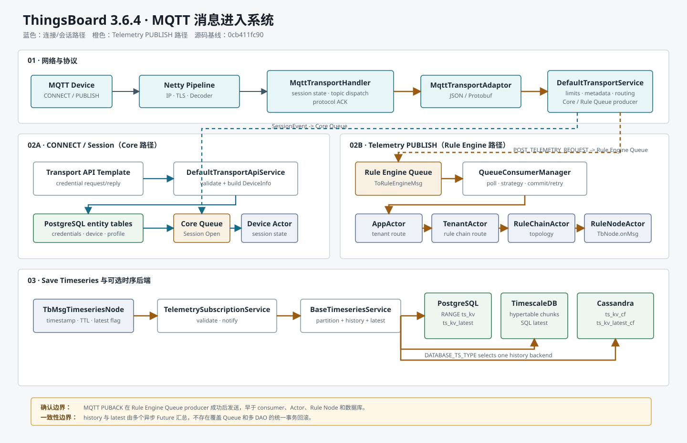

CHAPTER 01 · SOURCE VERIFIED
MQTT 消息进入系统
本章以普通设备发布 v1/devices/me/telemetry 为主线，同时追踪 CONNECT、凭据验证和 Session Open。Gateway、Sparkplug、RPC、OTA 只标出分流点。
DefaultTransportService 直接把它送入 Rule Engine Queue；消费后才进入 App/Tenant/RuleChain/RuleNode Actor。MQTT PUBACK 来自 Queue producer callback，不是数据库 ACK。一、流程目标
该流程把有连接状态、topic、QoS 和 payload 编码的 MQTT 报文，转成协议无关的 Rule Engine 消息；再由规则链决定是否转换为 TsKvEntry 并写入时序后端。Queue 隔离 Netty I/O 与规则、外部调用和数据库延迟。
| 成功点 | 源码语义 | 不代表 |
|---|---|---|
| CONNACK SUCCESS | 凭据有效，Session Open 的 Core Queue producer 成功，Transport session 已注册 | Device Actor 已完成所有状态更新 |
| PUBACK SUCCESS | Rule Engine Queue producer 接受了此次上报拆出的全部消息 | Queue 已消费或数据库已写入 |
| consumer commit | Processing Strategy 对当前消息包给出 commit 决策 | 跨 broker、Rule Node、history/latest 的统一事务 |
| TelemetryNodeCallback success | 主 history/latest/partition Futures 全部成功 | 后续节点和独立 Entity View callback 已结束 |
二、入口
| 入口 | 调用时机 | 入口类 |
|---|---|---|
| TCP/TLS | 设备连接 MQTT 普通或 SSL 端口 | org.thingsboard.server.transport.mqtt.MqttTransportService |
| CONNECT | 客户端建立 MQTT 会话 | org.thingsboard.server.transport.mqtt.MqttTransportHandler.processAuthTokenConnect(ChannelHandlerContext, MqttConnectMessage) |
| PUBLISH telemetry | 已认证设备发布标准或 v2 短主题 | org.thingsboard.server.transport.mqtt.MqttTransportHandler.processDevicePublish(ChannelHandlerContext, MqttPublishMessage, String, int) |
| Gateway | v1/gateway/telemetry | 先分流至 GatewaySessionHandler，不在本章展开 |
| Sparkplug | NBIRTH/NDATA/DBIRTH/DDATA 等 | 先分流至 SparkplugSessionHandler |
REST、CoAP、LwM2M、Scheduler、RPC 和 Actor 不是本流程的网络入口。它们可能产生同类 TbMsg，但认证和协议响应必须独立分析。
三、完整调用链
3.1 启动与认证
| 步骤 | 类与方法 | 输入 → 输出 | 职责 |
|---|---|---|---|
| 1 | org.thingsboard.server.transport.mqtt.MqttTransportService.init() | Spring 配置 → server channels | 创建 Netty boss/worker，绑定 TCP/SSL 端口 |
| 2 | org.thingsboard.server.transport.mqtt.MqttTransportServerInitializer.initChannel(SocketChannel ch) | SocketChannel → Pipeline | 安装 IP/Proxy、SSL、decoder、encoder、handler |
| 3 | org.thingsboard.server.transport.mqtt.MqttTransportHandler.channelRead(ChannelHandlerContext ctx, Object msg) | Netty msg → MQTT dispatch | 检查解码结果并释放引用计数对象 |
| 4 | org.thingsboard.server.transport.mqtt.MqttTransportHandler.processAuthTokenConnect(ChannelHandlerContext ctx, MqttConnectMessage msg) | clientId/user/password → auth proto | Transport Handler 不直接查询 DAO |
| 5 | org.thingsboard.server.common.transport.service.DefaultTransportService.process(DeviceTransportType type, ValidateBasicMqttCredRequestMsg msg, TransportServiceCallback callback) | auth proto → request/reply Future | 通过 Transport API Template 请求 Core |
| 6 | org.thingsboard.server.service.transport.DefaultTransportApiService.validateCredentials(ValidateBasicMqttCredRequestMsg mqtt) | 凭据字段 → DeviceCredentials | 支持 MQTT_BASIC、ACCESS_TOKEN 兼容和 X.509 分支 |
| 7 | org.thingsboard.server.service.transport.DefaultTransportApiService.getDeviceInfo(DeviceCredentials credentials) | 凭据 → device/profile proto | 读取 device，并从 cache 取得 Device Profile |
| 8 | org.thingsboard.server.transport.mqtt.MqttTransportHandler.onValidateDeviceResponse(ValidateDeviceCredentialsResponse msg, ChannelHandlerContext ctx, MqttConnectMessage connect) | 验证响应 → session | 创建 SessionInfo，发送 Session Open，注册异步 session，回 CONNACK |
3.2 Telemetry、Queue、Actor 与 DAO
| 步骤 | 类与方法 | 输入 → 输出 | 职责 |
|---|---|---|---|
| 1 | org.thingsboard.server.transport.mqtt.MqttTransportHandler.processPublish(ChannelHandlerContext, MqttPublishMessage) | topic/payload → device 分支 | 区分 gateway、Sparkplug 和普通设备 |
| 2 | org.thingsboard.server.transport.mqtt.MqttTransportHandler.processDevicePublish(ChannelHandlerContext, MqttPublishMessage, String, int) | telemetry topic → adaptor | 将主题语义封装在 Transport 内 |
| 3 | org.thingsboard.server.transport.mqtt.adaptors.JsonMqttAdaptor.convertToPostTelemetry(MqttDeviceAwareSessionContext, MqttPublishMessage) | JSON → PostTelemetryMsg | 校验 payload，生成 TsKvListProto |
| 4 | org.thingsboard.server.common.transport.service.DefaultTransportService.process(SessionInfoProto, PostTelemetryMsg, TbMsgMetaData, TransportServiceCallback) | transport proto → TbMsg | 限流、activity、metadata、时间批次拆分 |
| 5 | org.thingsboard.server.common.transport.service.DefaultTransportService.sendToRuleEngine(TenantId, DeviceId, CustomerId, SessionInfoProto, JsonObject, TbMsgMetaData, TbMsgType, TbQueueCallback) | profile/data → POST_TELEMETRY_REQUEST | 读取默认 Rule Chain 和 Queue |
| 6 | org.thingsboard.server.queue.TbQueueProducer.send(TopicPartitionInfo, T, TbQueueCallback) | ToRuleEngineMsg → queue ack | 屏蔽 Kafka/in-memory/SQS 等实现 |
| 7 | org.thingsboard.server.service.queue.ruleengine.TbRuleEngineQueueConsumerManager.processMsgs(List, TbQueueConsumer, Queue) | message pack → commit/reprocess | Submit/Processing Strategy 控制顺序、超时和重试 |
| 8 | org.thingsboard.server.service.queue.ruleengine.TbRuleEngineQueueConsumerManager.forwardToRuleEngineActor(String, TenantId, ToRuleEngineMsg, TbMsgCallback) | bytes → QueueToRuleEngineMsg | 进入 ActorSystemContext |
| 9 | org.thingsboard.server.actors.app.AppActor.onQueueToRuleEngineMsg(QueueToRuleEngineMsg) | tenant msg → TenantActor | Actor 树根路由 |
| 10 | org.thingsboard.server.actors.tenant.TenantActor.onQueueToRuleEngineMsg(QueueToRuleEngineMsg) | ruleChainId → RuleChainActor | 空 ID 走 Root Rule Chain |
| 11 | org.thingsboard.server.actors.ruleChain.RuleNodeActorMessageProcessor.onRuleChainToRuleNodeMsg(RuleChainToRuleNodeMsg) | node envelope → TbNode.onMsg | 检查组件、分区和最大节点执行数 |
| 12 | org.thingsboard.rule.engine.telemetry.TbMsgTimeseriesNode.onMsg(TbContext, TbMsg) | TbMsg JSON → List<TsKvEntry> | 解析 timestamp/TTL，选择是否写 latest |
| 13 | org.thingsboard.server.service.telemetry.DefaultTelemetrySubscriptionService.saveAndNotify(TenantId, CustomerId, EntityId, List, long, FutureCallback) | entries → save Future | 校验、API Usage、WebSocket/Entity View callback |
| 14 | org.thingsboard.server.dao.timeseries.BaseTimeseriesService.save(TenantId, EntityId, List, long) | entry → partition/history/latest Futures | 聚合后端写入结果，但不提供统一回滚 |
完整逐步源码位置、参数和设计原因见 Markdown 版调用链。
四、消息流
flowchart LR
D[MQTT Device] --> N[Netty Pipeline]
N --> H[MqttTransportHandler]
H -->|CONNECT| API[Transport API]
API --> AUTH[DefaultTransportApiService]
AUTH --> EDB[(device_credentials / device)]
H -->|Session Open| CQ[Core Queue]
CQ --> DA[Device Actor]
H -->|Telemetry PUBLISH| AD[MqttTransportAdaptor]
AD --> TS[DefaultTransportService]
TS -->|POST_TELEMETRY_REQUEST| RQ[Rule Engine Queue]
RQ --> C[Queue Consumer Manager]
C --> AA[AppActor]
AA --> TA[TenantActor]
TA --> RC[RuleChainActor]
RC --> RN[RuleNodeActor]
RN --> ST[Save Timeseries Node]
ST --> TSS[TelemetrySubscriptionService]
TSS --> BTS[BaseTimeseriesService]
BTS --> DB[(SQL / Timescale / Cassandra)]
TS -. producer callback .-> H
H -. PUBACK, not DB ACK .-> D
flowchart TD
M[MqttTransportHandler] --> K{消息语义}
K -->|Session / subscribe / RPC| CORE[sendToDeviceActor -> Core Queue]
CORE --> DEVICE[Device Actor]
K -->|Telemetry / client attributes| RULE[sendToRuleEngine -> Rule Queue]
RULE --> ACTORS[Rule Chain / Rule Node Actors]

五、时序图
打开完整 PlantUML 源文件，或直接查看经 PlantUML CLI 验证生成的时序图 SVG。图中同时包含认证、Session Open、提前 PUBACK、Rule Engine 消费、三种时序后端和 commit/reprocess 分支。
{kind=link}
sequenceDiagram
autonumber
participant D as MQTT Device
participant H as MqttTransportHandler
participant T as DefaultTransportService
participant Q as Rule Engine Queue
participant C as Queue Consumer
participant R as Rule Engine Actors
participant DB as Timeseries DAO
D->>H: PUBLISH telemetry QoS 1
H->>T: process(SessionInfo, PostTelemetryMsg, md, callback)
T->>Q: producer.send(ToRuleEngineMsg)
Q-->>T: producer success
T-->>H: callback success
H-->>D: PUBACK SUCCESS
Note over D,H: 数据库可能尚未开始写
C->>Q: poll()
C->>R: QueueToRuleEngineMsg
R->>DB: save history + latest
DB-->>R: Future result
R-->>C: final callback
C->>Q: commit or reprocess
六、数据变化
| 对象/存储 | 变化 | 边界 |
|---|---|---|
| DeviceSessionCtx | 设置 DeviceInfo、DeviceProfile、SessionInfo、connected；维护连接前队列 | 单 TCP session |
| Transport sessions | registerAsyncSession(...) 注册 SessionMetaData | Transport 运行时结构 |
| PostgreSQL entity tables | 认证读取 credentials/device/profile | 本流程无普通 telemetry 实体写 |
| Device Profile cache | 读取 profile、defaultRuleChainId、defaultQueueName | cache 失效属于独立流程 |
| Rule Engine Queue | 写 ToRuleEngineMsg(TbMsg bytes) | PUBACK 在 producer success 后返回 |
| Actor mailboxes | 临时 QueueToRuleEngineMsg / RuleChainToRuleNodeMsg | 不是数据库 |
| History | 写 ts_kv 或 ts_kv_cf | 由 DATABASE_TS_TYPE 选择 |
| Latest | 写 ts_kv_latest 或 ts_kv_latest_cf | skipLatestPersistence 时跳过 |
| WebSocket | 主 save Future 成功后发送 time-series update | 不决定 MQTT ACK |
BaseTimeseriesService 通过多个 ListenableFuture 汇总 partition、history、latest。它只保证聚合 Future 的成功条件，不形成可回滚的跨 DAO 事务。
七、源码分析
核心接口与实现
| 接口/抽象 | 主要实现 | 隔离目的 |
|---|---|---|
org.thingsboard.server.common.transport.TransportService | org.thingsboard.server.common.transport.service.DefaultTransportService | 各设备协议共享认证、session、telemetry、RPC 契约 |
org.thingsboard.server.transport.mqtt.adaptors.MqttTransportAdaptor | org.thingsboard.server.transport.mqtt.adaptors.JsonMqttAdaptor、org.thingsboard.server.transport.mqtt.adaptors.ProtoMqttAdaptor、org.thingsboard.server.transport.mqtt.adaptors.BackwardCompatibilityAdaptor | payload 编码与业务消息解耦；兼容实现先尝试 Proto，失败后回退 JSON |
org.thingsboard.server.queue.TbQueueProducer<T> | Kafka、in-memory、SQS、Pub/Sub、RabbitMQ、Service Bus templates | 业务不依赖 broker SDK |
org.thingsboard.server.dao.timeseries.TimeseriesDao | JpaSqlTimeseriesDao、TimescaleTimeseriesDao、CassandraBaseTimeseriesDao | 统一 history 读写契约 |
org.thingsboard.server.dao.timeseries.TimeseriesLatestDao | SqlTimeseriesLatestDao、CassandraBaseTimeseriesLatestDao | latest 与 history 查询模型分离 |
三次关键转换是 MqttPublishMessage → PostTelemetryMsg → TbMsg → TsKvEntry。它们分别建立协议边界、规则/队列边界和持久化边界。
八、Actor 分析
org.thingsboard.server.actors.service.DefaultActorService.initActorSystem() 创建 APP、TENANT、DEVICE、RULE dispatcher 和根 AppActor。Telemetry consumer 调用 ActorSystemContext.tell(TbActorMsg) 后依次进入 AppActor、TenantActor、RuleChainActor、RuleNodeActor。
- AppActor 按 tenant 创建或选择 TenantActor。
- TenantActor 按
TbMsg.ruleChainId选择指定链；为空走 Root Rule Chain。 - RuleChainActorMessageProcessor 保存 first node 和 relation 拓扑。
- RuleNodeActorMessageProcessor 反射创建
TbNode，检查状态和最大执行数后调用tbNode.onMsg(...)。
Actor 提供局部串行、生命周期消息和分层路由，不提供数据库事务或 exactly-once。Session Open 才走 Device Actor，普通 telemetry 不走。
九、Kafka 分析
queue.type 默认是 in-memory，也可设为 Kafka、SQS、Pub/Sub、Service Bus 或 RabbitMQ。Kafka 配置下：
KafkaTbTransportQueueFactory.createRuleEngineMsgProducer()创建 client idtransport-node-rule-engine-<serviceId>。- 默认 Rule Engine 基础 topic 是
tb_rule_engine，实际 Queue 可配置自己的 topic。 TbKafkaProducerTemplate.send(...)以 message UUID 字符串为 record key，protobuf bytes 为 value。KafkaTbRuleEngineQueueFactory.createToRuleEngineMsgConsumer(Queue)的默认 group 为re-<queueName>-consumer；隔离租户包含 tenantId。TbKafkaConsumerTemplate.doCommit()调用consumer.commitSync()，但仅在 Processing Decision 允许时发生。
flowchart LR
P[poll pack] --> S[Submit Strategy]
S --> W[await callbacks]
W --> A[Processing Strategy analyze]
A -->|commit| C[commitSync]
A -->|retry| R[update reprocess map]
R --> S
十、数据库分析
| 后端 | History | Latest | 写入特点 |
|---|---|---|---|
| PostgreSQL SQL | ts_kv RANGE partitions | ts_kv_latest | JpaSqlTimeseriesDao 确保分区并进入 batch queue |
| TimescaleDB | ts_kv hypertable/chunks | ts_kv_latest | TimescaleTimeseriesDao.savePartition(...) 为 no-op，chunk 自动路由 |
| Cassandra | ts_kv_cf + ts_kv_partitions_cf | ts_kv_latest_cf | 应用分区键、可选原生 TTL、异步 driver |
Timescale 安装服务执行 create_hypertable('ts_kv', 'ts', chunk_time_interval => ...)；3.6.4 配置中的 chunk interval 默认是 7 天。SQL/Timescale 使用 ts_kv_dictionary 将 telemetry 字符串 key 压成 int。History 由 DATABASE_TS_TYPE 选择，latest 由独立的 DATABASE_TS_LATEST_TYPE 选择，因此支持 Cassandra history + SQL latest 等 hybrid 组合。
flowchart LR
B[BaseTimeseriesService] --> H[TimeseriesDao]
B --> L[TimeseriesLatestDao]
H -->|sql| P[(PostgreSQL partitions)]
H -->|timescale| T[(Hypertable chunks)]
H -->|cassandra| C[(ts_kv_cf)]
L -->|sql/timescale| SL[(ts_kv_latest)]
L -->|cassandra| CL[(ts_kv_latest_cf)]
本 telemetry 持久化主链没有 Redis 写调用。不能由“平台支持 Redis”推导出“每次 telemetry 写 Redis”。
十一、异常处理
| 失败位置 | 行为 | 后果 |
|---|---|---|
| decoder/adaptor | 关闭连接，或 MQTT 5/Profile 配置下返回错误 PUBACK | 不写 Rule Queue |
| 认证 | 返回 NOT_AUTHORIZED/BAD_USERNAME/SERVER_UNAVAILABLE 并关闭 | 无 Session Open |
| session queue 超限 | 关闭当前 session | 阻止每设备内存队列无限增长 |
| Rule Queue producer | Transport callback error，关闭 channel | 不返回成功 PUBACK |
| Root Rule Chain 不存在 | TbMsg callback failure | Processing Strategy 决定 retry/skip |
| 指定 Rule Chain Actor 不存在 | 当前源码 trace + TODO dead letter，然后 callback success | 可能提交但不落库，需监控配置一致性 |
| DB history/latest 任一失败 | 聚合 Future 失败，Rule Node 走 Failure | 已完成的独立写不回滚 |
| pack timeout | Processing Strategy 分析 timeout | 可能重试并产生重复副作用 |
十二、源码阅读路线
MqttTransportHandler.processDevicePublish(...)：先掌握 topic 分流。JsonMqttAdaptor.convertToPostTelemetry(...)：看 payload 到 protobuf。DefaultTransportService.process(...PostTelemetryMsg...)：与 SessionEvent overload 对比。DefaultTransportService.sendToRuleEngine(...)：看 Profile、Queue 和 partition。TbRuleEngineQueueConsumerManager.processMsgs(...)：看 callback、timeout、commit。AppActor、TenantActor：只跟踪 QUEUE_TO_RULE_ENGINE_MSG。RuleChainActorMessageProcessor、RuleNodeActorMessageProcessor：找到TbNode.onMsg。TbMsgTimeseriesNode.onMsg(...)：看 TTL、timestamp、latest。BaseTimeseriesService.doSave(...)：理解 history/latest 非事务双写。- 最后按部署选读 SQL、Timescale 或 Cassandra DAO。
十三、常见面试题
MQTT telemetry 会先经过 Device Actor 吗？
不会。普通 telemetry 由 Transport 直接进入 Rule Engine Queue；Session Open、订阅和 RPC 等会话消息才走 Core Queue/Device Actor。
PUBACK 能否证明数据库写成功？
不能。它连接 Rule Engine Queue producer callback，早于 consumer、Actor 和 DAO。
为什么 history/latest 双写？
history 支持时间范围与聚合；latest 用 (entity_id,key) 主键为当前状态查询提供固定成本。代价是额外写放大和短时不一致。
Timescale 为什么没有应用分区创建？
ts_kv 已转成 Hypertable，Timescale 根据 ts 自动路由 chunk，所以 savePartition(...) 立即返回。
Kafka 是必需的吗？
不是。Queue SPI 支持多种实现，默认配置是 in-memory；Kafka 是分布式部署常用选项。
offset 何时提交？
pack callback/timeout 形成 Processing Result 后，由 Queue Processing Strategy 决定 commit 或 reprocess；Kafka 实现最终调用 commitSync()。
Rule Chain 配错为何会“ACK 成功但无数据”？
ACK 已在 producer 阶段完成。后续链若无 Save Timeseries、提前过滤、目标链不存在或失败被策略跳过，都可能不落库。
history/latest 是一个事务吗？
不是。多个异步 Future 汇总完成状态，已成功的子写不会因另一个失败而统一回滚。